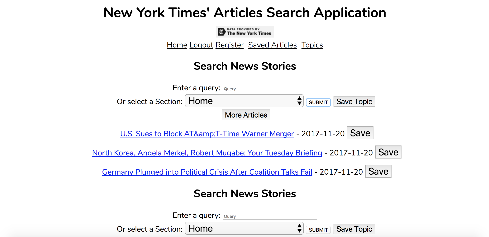
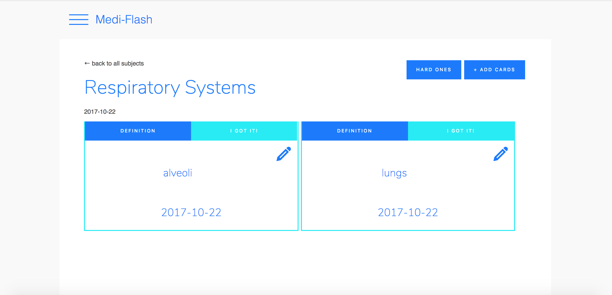

Home
About
Contact
Applications

 The New York Times Article Search Application
will allow a user to search the New York Times article database by keyword and will
retrieve the most relevant 3-10 articles. It also allows for the retrieval of 3-10 recent articles
from the New York Times based on their section. The results are links to the New York Times web site.
These URLs may be saved. A user can also save up to four topics, which will
then be displayed along with the query results whenever they log in. This was developed using React and
Rails.
The New York Times Article Search Application
will allow a user to search the New York Times article database by keyword and will
retrieve the most relevant 3-10 articles. It also allows for the retrieval of 3-10 recent articles
from the New York Times based on their section. The results are links to the New York Times web site.
These URLs may be saved. A user can also save up to four topics, which will
then be displayed along with the query results whenever they log in. This was developed using React and
Rails.

The Medi-Flash Application
allows a user to create flashcards grouped by subject. The user has the option of typing in the definition of a flashcard term
or retrieving a definition from the Merriam Webster Medical Dictionary and editing that. Cards can be placed into 2
categories, those that need more studying, the default, and those that have been memorized. This was
developed by a team of 3 developers using React and Express.